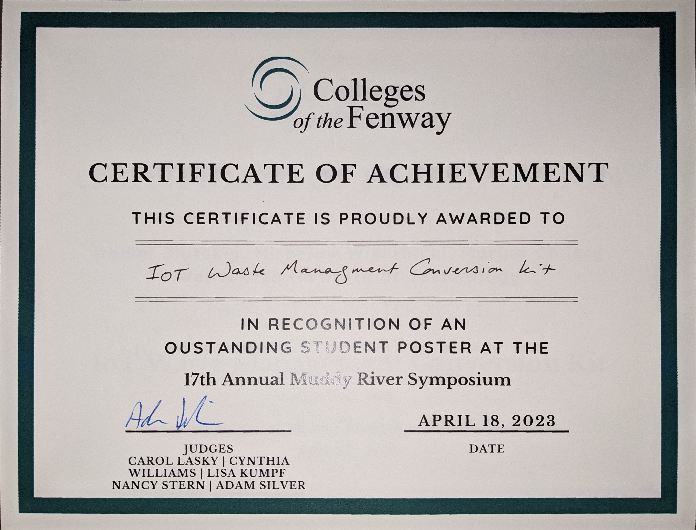
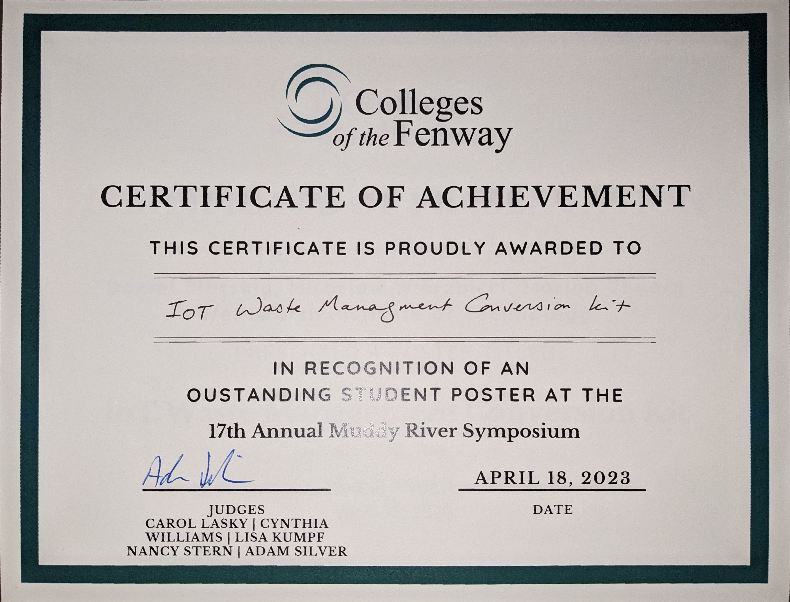
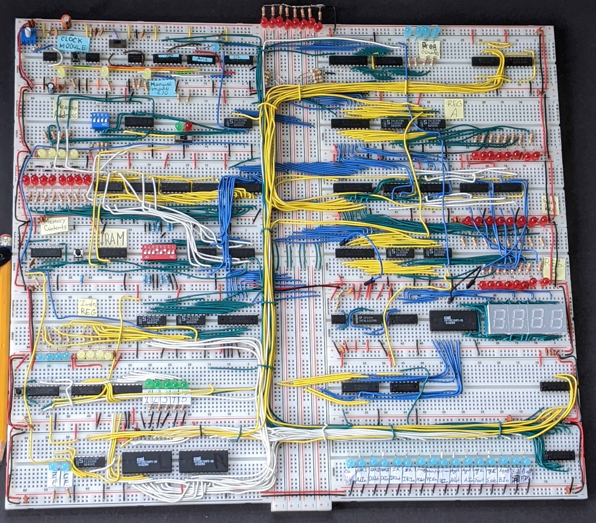
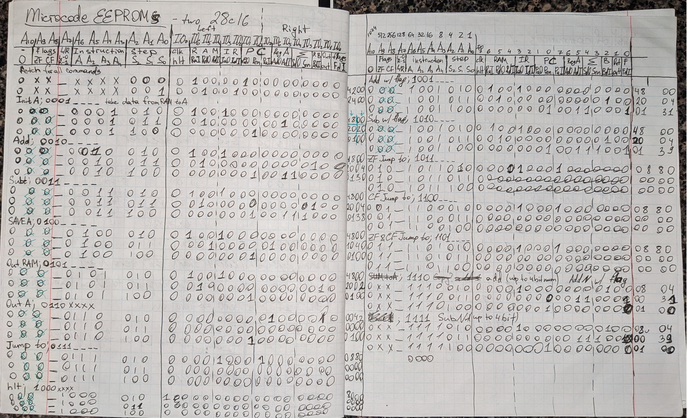
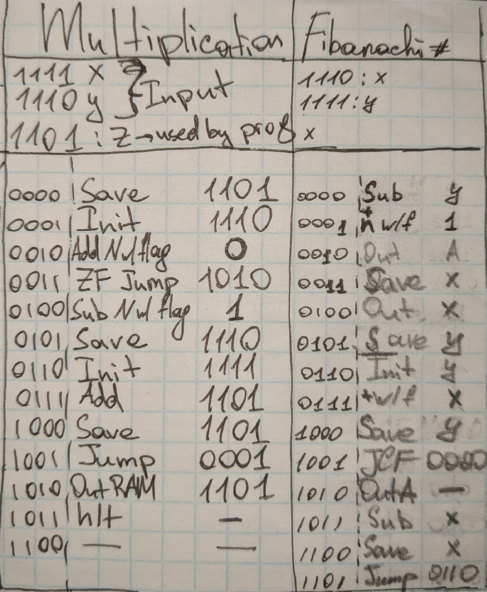
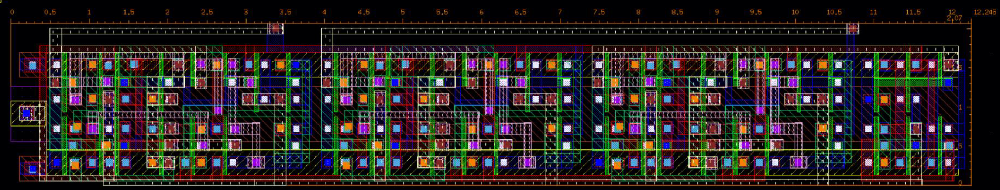
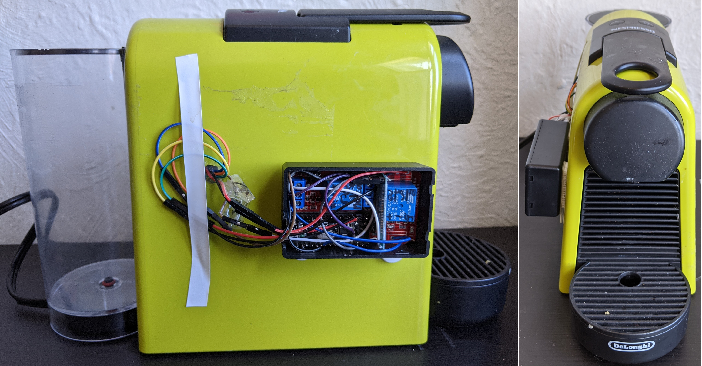
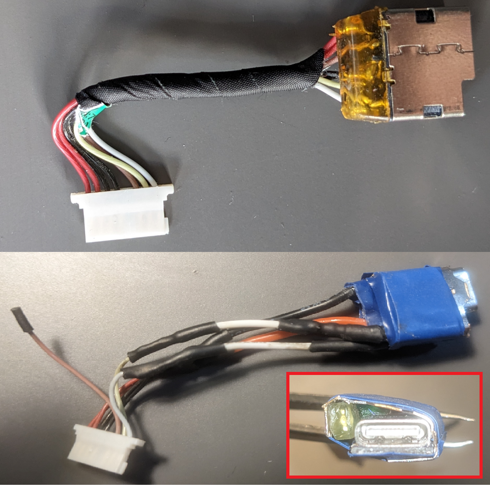
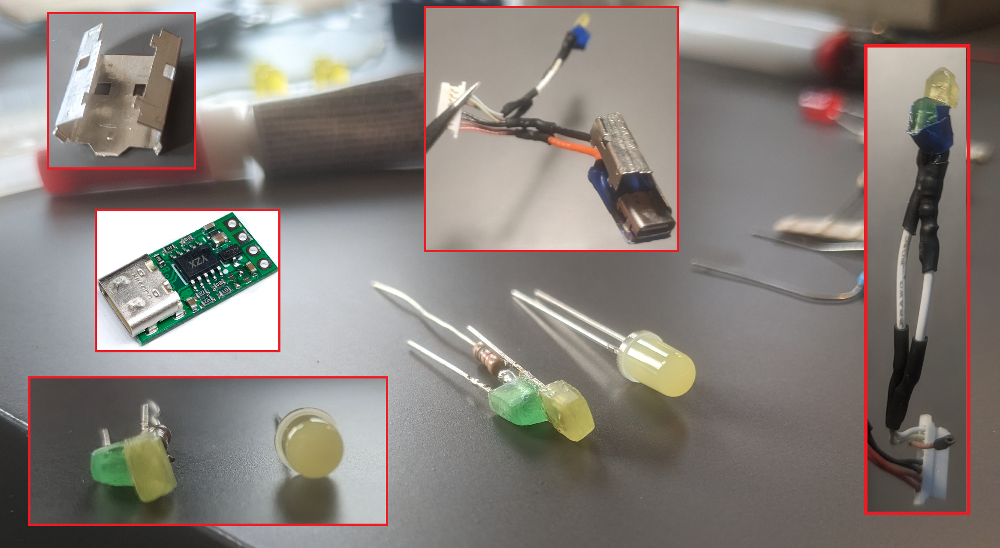

GitHub repository will be added soon.
TEXT TEXT
I am working on it as part of the senior design project. Spring and Summer 2023.
The certificate we won at Muddy River Symposium
GitHub repository will be added soon.
TEXT TEXT
I am working on it as part of the senior design project. Spring and Summer 2023.
The certificate we won at Muddy River Symposium
I am designing a NHP detection system for farmers to reduce crop losses. I am developing machine learning algorithm to identify approaching primates based on the camera and microphone inputs. If any monkeys are detected in the field the alert will be sent though an IOT module (MKR NB 1500). Alerts are sent using an HTTP POST request sent to Discord webhook.
I am working on it as an Undergraduate Research Assistant. May 2022 – Present.
I have investigated the future of axial flux motors applications in comparison with more traditional topologies. Review paper presents major parameters for design consideration, proposing methods for losses minimization.
Worked on it as an Undergraduate Research Assistant. February 2021 – May 2022.
Hand-crank emergency phone charger design for both the body, made out of 3D parts, and electrical circuit, with generator and gear box. Prototyped and conducted series of testing to verify the design and efficiency.
Done as part of the first-year engineering design class.
You probably noticed from the design of this website it is not made by the web design genius and I am not pretending to be one. I wanted to gain experience in HTML/CSS/JS and thought creating a portfolio is the greatest way to experiment with web programming. To introduce myself to the subject took a wonderful course at Coursera taught by Yaakov Chaikin. Recommend it to anyone new to the field.
Coursera linkBuilt a processor on breadboards using logic gate ICs, programmed EEPROMs and microcodes. The assembled architecture consists of the clock, registers, logic unit, RAM, program counter, control logic, and display output. The project was inspired by BenEater, his videos are great at explaining the basics behind complex computer concepts. Currently working on expanding the memory to have more microcodes and therefore expand capabilities.
Photo of the completed project
Photo of my notes with microcode instructions
Some of programs written for this CPU
This project was done as part of the VLSI class (graduate level). For this project the goal was to design a four-bit adder out of n-type and p-type MOSFETs. Combining them into logic gates following the pass transistor logic we were able to construct a logic circuit which has 8 inputs and 5 outputs. Inputs accommodate the required two summation terms which are 4 bits each. The output is the sum of the two inputs, which can be a maximum of 5 bits. To test our circuit, we assembled it using the Cadence Virtuoso simulation software. By constructing the circuit in simulation, we were not only able to test if it performs desired functions, but also calculate its efficiency. To obtain the area of the circuit we even assembled the layout of the circuit using the basic elements, such as the Nimp, Pimp, Nwell, metal, etc.
Cadence layout passed both the DRC check, which proves that the circuit complies with the rules of the layout construction, and the LVS check, which means that the layout produces the same result as the circuit constructed previously out of transistors.
Discord bot to automate class assignment and channel creation, with some fun features. Assigns discord roles to people based on the classes they are taking during a particular semester. If there are more than certain number of people taking some class on the server separate channel will be created only accessible to those taking the class. Helps connecting students with their peers taking same classes. Students use server for group studying and reaching out for help to classmates. 40 active members and counting!
Bot is running on CHIP single-board computer. It is now discontinued and very limited information is available online. Thanks to community some of the files were archived and I got it to work.
I designed an analog circuit that controls LED based on the status of contacts. Primary use is for water tanks with contacts submerged in water. If water drops below the contacts' level LED powers on. The goal was to run the circuit off batteries and therefore consumption in stand-by should be minimal.

MultiSim simulation to confirm low power consumption

Projects for which I used the circuitry. On the left is the coffe maker tank, it had no protection for empty tank and acted weird if ran empty. On the right is the circuitry itself used in auto-watering project for plants. Is there such a thing as electrcial engineering plant art?
I am a heavy sleeper, and even if the alarm manages to wake me up I cannot get myself out of the bed. So, one day I decided to add a Bluetooth to my coffee machine, so that I can start brewing once I wake up and therefore have a reason to get up. I had some relays, Arduino, and HC-05 module around and did not want to completely mess up my only coffee machine. Adding relays in parallel to existing buttons and connecting HC-05 through UART, I was able to send commands to brewer from my smartphone.
Coffe machine with a wireless module, buttons were still working fine.
Telegram, popular messaging app, has stickers. They are like custom emojis, however can be made out of any pictures/gifs. I believe stickers can also be made out of sounds. Telegram already has a built-in functionality of in-line bots and I want to build on it to add a list of audio recordings that will be sent to chat in form of voice message. Project is in progress, currently working on adding new audios. I can successfully send those already saved. For storage I am using Telegram channel, so storage is free.
I have a relatively old laptop that I am using to this day as daily driver, and also as a volunteer for all kind of modifications. I previously erased all symbols from keycaps, replaced components, but this project is the most practical and I can recommend this upgrade. I had a typical barrel jack for charging and replaced it with USB Type-C PD circuit. I was lucky, my laptop requires 19.6V as input and type-c circuits provide 20V. Gladly, all modern laptops have a built-in regulator, so I did not need to worry about that slight offset. Besides just soldering a new jack I wanted to keep the LEDs that indicate charging status. Parts were assembled into USB bracket to keep them together.
Old charging module (top) and new one (bottom). just ignore that loose wire, if you do not have spare parts after fixing something you did it wrong.
Insides of my custom charging module.

Custom module installed into a chassis. Fits nicely into the existing holding bracket!
Gardening is fun, especially in the apartment. Plants are great decoration, there is something inside us,
humans, that wants to take care of alive things, and eating salad out of home-grown tomatoes is just an amazing
feeling. However, this is a portfolio of engineering projects. I already mentioned in the NotLed project how
I used that circuitry for auto-watering. It was making sure there is enough water in the reservoir. That project
was done in just an hour, as we were packing to go for a vacation abroad and suddenly realized plants need
water.
Moreover, plants require sunlight. We have cucumbers, peppers, basil growing on windowsill, but for
tomatoes we wanted additional sunlight. So, I wired the lamps to hang above them. The wiring is nicely fixed
along the wall, has a dedicated switch and plugs into the power outlet.

plants 😍